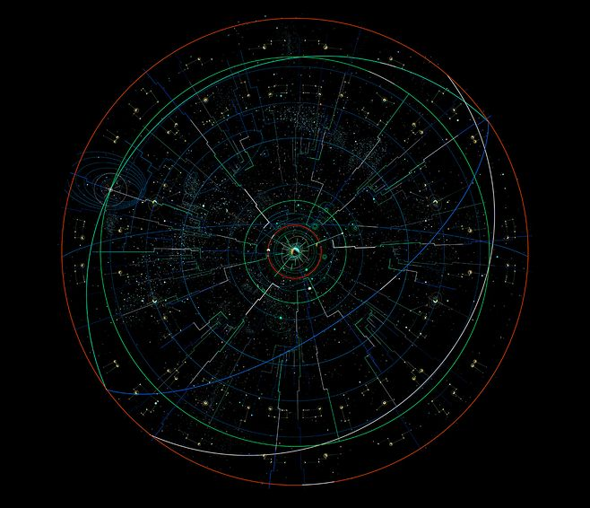
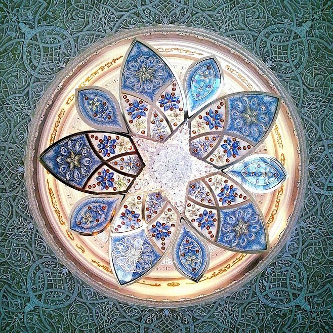
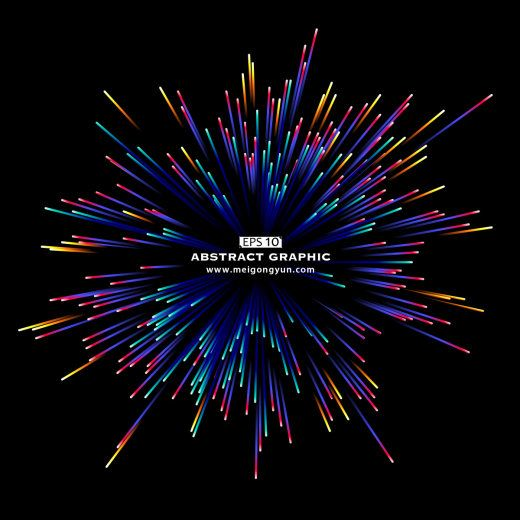

团队名称
上海大学
上海大学


尝试 position 和 float 的效果，思考它们的异同和应用场景。
注意测试不同情况，尤其是极端情况下的效果。
图片和文字内容请自行替换，尽可能体现团队的特色。
调节浏览器宽度，固定宽度和自适应宽度的效果始终符合预期。
改变中间一栏的内容长度，以确保在中间一栏较高和右边一栏较高时，父元素的高度始终为子元素中最高的高度。
其他效果图中给出的标识均被正确地实现。